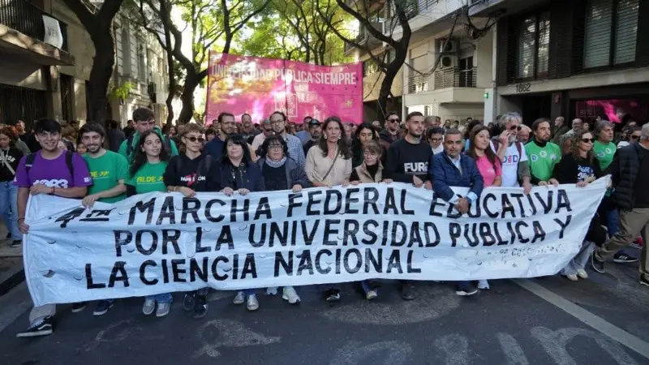

Docentes, estudiantes, gremialistas y autoridades expresaron, desde la movilización local, su respaldo al reclamo nacional por financiamiento y salarios. En la ciudad, decenas de miles de personas marcharon desde plaza San Martín al Monumento.

Decenas de miles de personas volvieron a colmar este martes las calles del centro de Rosario en una nueva Marcha Federal Universitaria, convocada en defensa de la educación pública y en reclamo por la plena aplicación de la Ley de Financiamiento Universitario. La jornada se convirtió en un escenario de reclamos compartidos por autoridades, gremios, docentes y estudiantes, quienes advirtieron sobre el deterioro crítico del sistema.
La movilización unió la plaza San Martín con el Monumento Nacional a la Bandera, donde al caer la tarde se realizó el acto central de la protesta, con réplicas en las principales ciudades del país.
Además del impacto de una convocatoria que volvió a mostrar una presencia multitudinaria en la ciudad, una de las postales de la jornada fueron los originales carteles y pancartas pero también las diferentes voces que explicaron por qué salieron a la calle.
La mirada de las autoridades
Al frente de la columna, el vicerrector de la UNR, Darío Masía, había definido más temprano en diálogo con Radio 2 que la convocatoria era “incalculable” y estimó que participaban “más de 100 mil personas”.
Además, destacó el respaldo social que acompañó el recorrido de la movilización. “A los costados de la marcha la gente nos va acompañando”, señaló, y remarcó que el mensaje de la ciudadanía es claro en defensa de una universidad de gestión pública.
El reclamo gremial
Desde la columna docente, el secretario general del gremio Coad, Federico Gayoso, consideró que las movilizaciones vienen generando resultados, aunque admitió que el contexto sigue siendo complejo.
“En cada marcha se ha ido consiguiendo algo, aunque parezca poco en este contexto”, afirmó ante el móvil de El Tres, que cubrió la jornada completa de protesta desde el lugar.
Y planteó cuál es, a su entender, el objetivo de mantener la presencia en la calle: “Seguir juntando voluntades y mostrarle al gobierno que la sociedad no está dispuesta a entregar un emblema como el sistema universitario y la educación pública”.
“Hoy todos somos universidad pública”
Entre los profesores que participaron de la convocatoria, uno de los mensajes más repetidos estuvo ligado al impacto social que, aseguran, trasciende el aula.
“Estamos en defensa no solo de la universidad pública como un derecho, sino para seguir investigaciones, seguir trabajando en la salud pública, trabajando por los más vulnerables. Hoy todos somos universidad pública”, expresó una docente.
Otro profesor puso el foco en la situación salarial y presupuestaria: “Venimos a luchar por nuestros salarios y por el presupuesto en general. Se está bastardeando la educación en general”, sostuvo.
Los estudiantes, entre el apoyo y la preocupación
Desde las agrupaciones estudiantiles y entre quienes marcharon de manera independiente, el mensaje mezcló agradecimiento, preocupación y respaldo a sus docentes.
“A todos los que atravesamos la universidad pública nos transforma la vida, no solo en términos personales sino para todo el país”, expresó una estudiante.
Otro alumno admitió que la crisis ya impacta en la vida académica cotidiana: “Estamos muy preocupados porque nos sacaron muchas semanas de clases con los paros", expresó, no contra los profesores sino contra las causales de la situación.